Loading...
Loading...
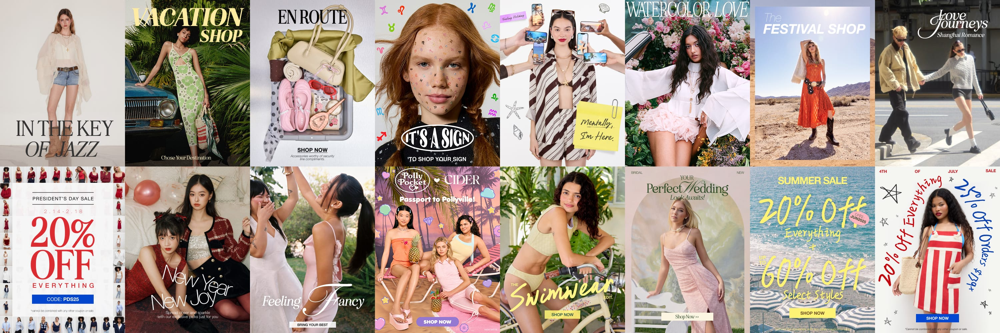
“We make everyday statement pieces for everyone, everywhere.”
We worked with Cider as it grew from a young digital fashion brand into a global name. Founded in 2020, the brand built a strong following among Gen Z through trend-driven, accessible clothing and an unusually active social presence. Its promise was simple: make everyday statement pieces for everyone, everywhere.
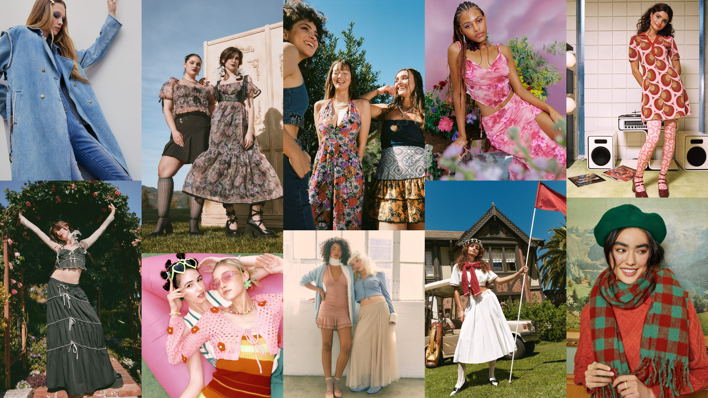
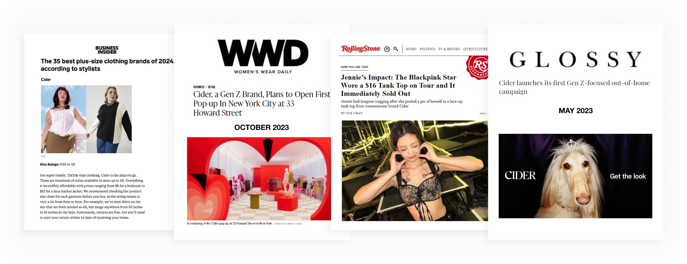
That openness was part of Cider’s appeal. The brand moved easily between romantic, playful, nostalgic, and trend-led worlds, giving people a wide range of ways to see themselves in it. But as the business expanded, the same flexibility began to make the brand feel less recognizable from one touchpoint to the next.
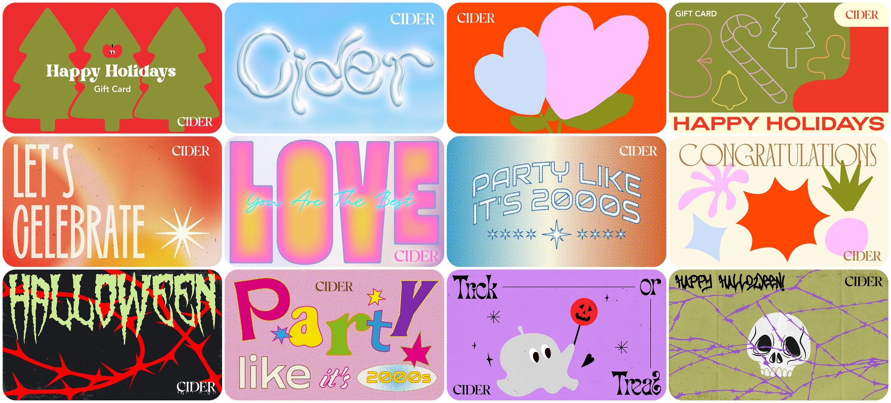
Our challenge was not to remove that personality, but to give it a clearer point of view. We wanted Cider to stay playful and inclusive while feeling more considered, so the brand could grow beyond a collection of campaigns and become a world people could recognize at a glance.
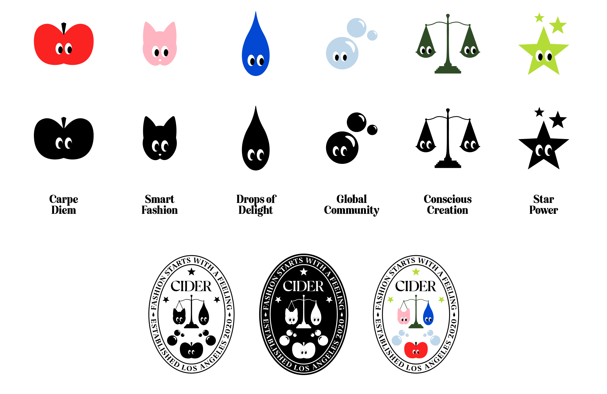
We began by aligning the visual system, the brand voice, and the way Cider talked about its values. This meant editing as much as adding: creating a stronger hierarchy, reducing visual noise, and making sustainability part of the conversation without turning it into a separate layer of messaging.
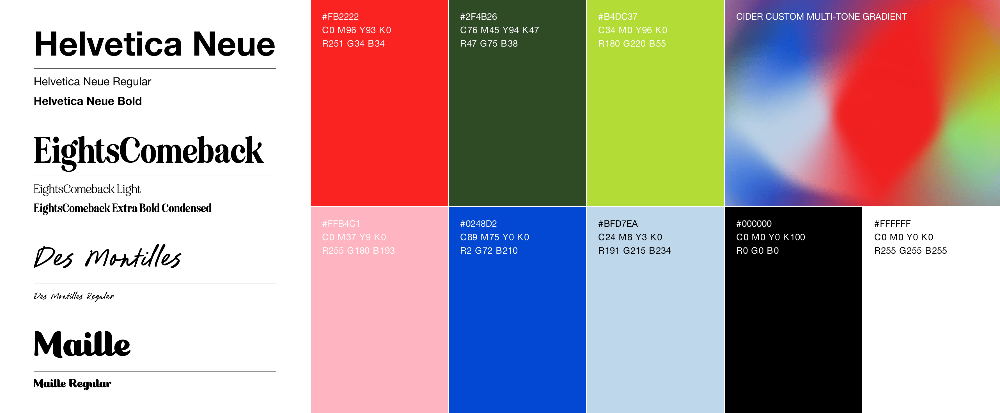
Cider began growing during a period when digital fashion communities were forming quickly and new ideas could travel overnight. As the brand expanded, its story became more complicated and harder to hold together. To welcome more people into the Cider world—not only its earliest Gen Z audience—we needed to make the identity easier to understand and easier to extend.
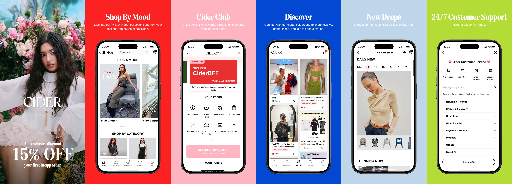
Our goal was to build recognition without flattening the brand’s energy: help people feel confident shopping Cider, make its point of view more memorable, and create a visual foundation that could hold up as the business moved into new categories and experiences.
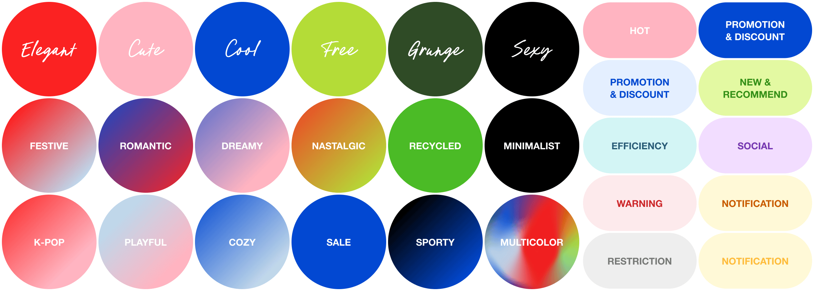
We established a more disciplined visual language around typography, color, and layout. Colors could still shift with the mood of a collection, but they now had a clear role; type and spacing created continuity; and those decisions carried into UI and UX so the brand felt like the same Cider wherever people encountered it.
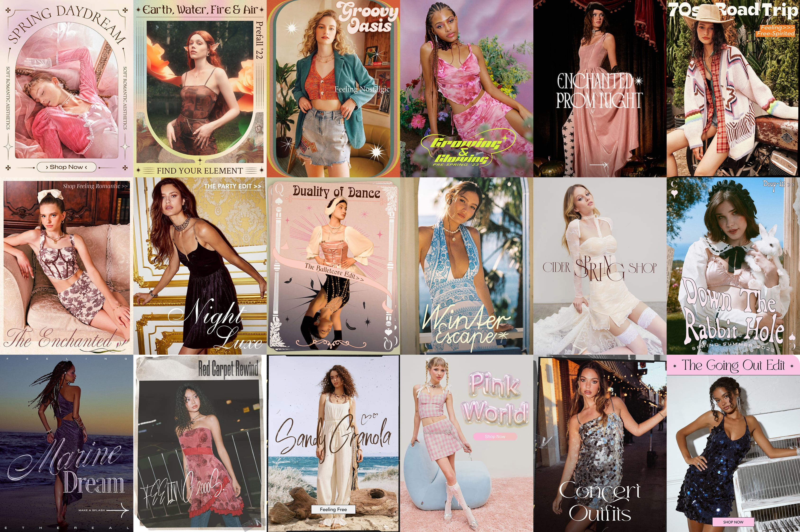
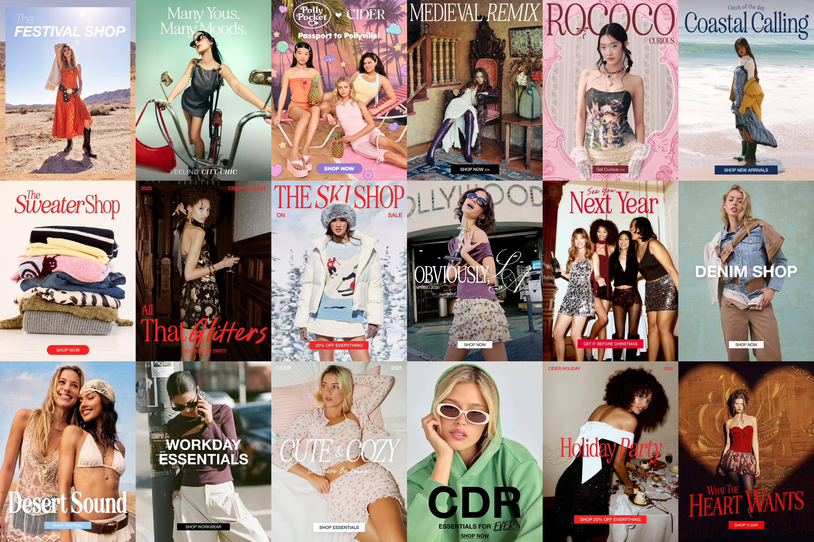
These before-and-after views show the shift most clearly. The earlier work had plenty of charm, but each campaign often invented its own visual rules. After the refresh, the work could remain expressive while sharing a stronger underlying structure. That consistency made the brand easier to recognize and gave our team more room to explore without losing the thread.
Our team worked across brand design, visual direction, product materials, and the full UI and UX experience. We treated these as connected parts of the same system: visual decisions shaped how the product felt, while user behavior helped us understand where the identity needed to be clearer or more flexible. The result was not a single look applied everywhere, but a common set of decisions that made the brand more coherent and the digital experience easier to navigate.
Cider’s First NYC Pop‑Up: A Physical Leap for a Digital Star
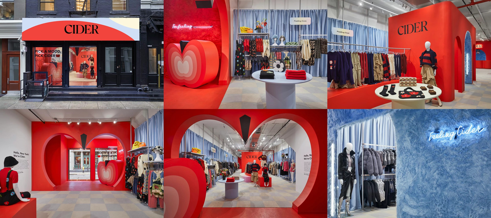
Cider’s First NYC Pop‑Up
When Cider opened its first U.S. pop-up in SoHo in late 2023, we saw a digital brand test its identity in a very different medium. The bold colors and interactive details gave the online world a physical rhythm, while the more controlled environment helped us understand which parts of the brand people responded to in person.
Cider’s First Permanent Store: Bringing the Brand Home
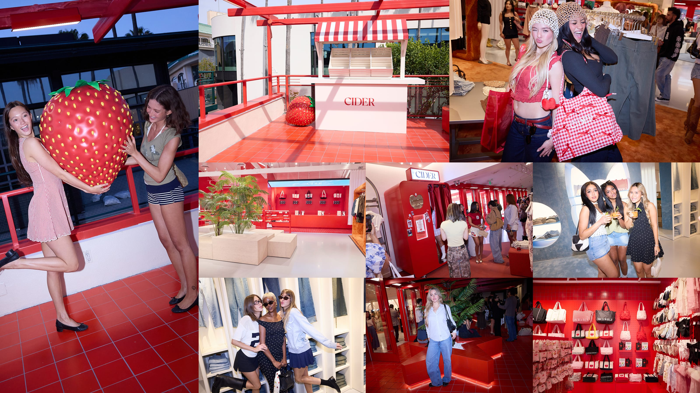
Cider’s first permanent store opened on April 17, 2026, at Los Angeles’ Original Farmers Market, next to The Grove. For a brand that began on a screen, the space is less about simply adding a retail address and more about creating a place where the community can spend time with Cider. Our team was involved in the visual design, translating the refreshed identity into the store’s color, typography, graphics, and customer touchpoints. The challenge was to carry over the energy of the digital experience without making the space feel like a website brought into the real world, so the environment could feel open, playful, and comfortable to move through.